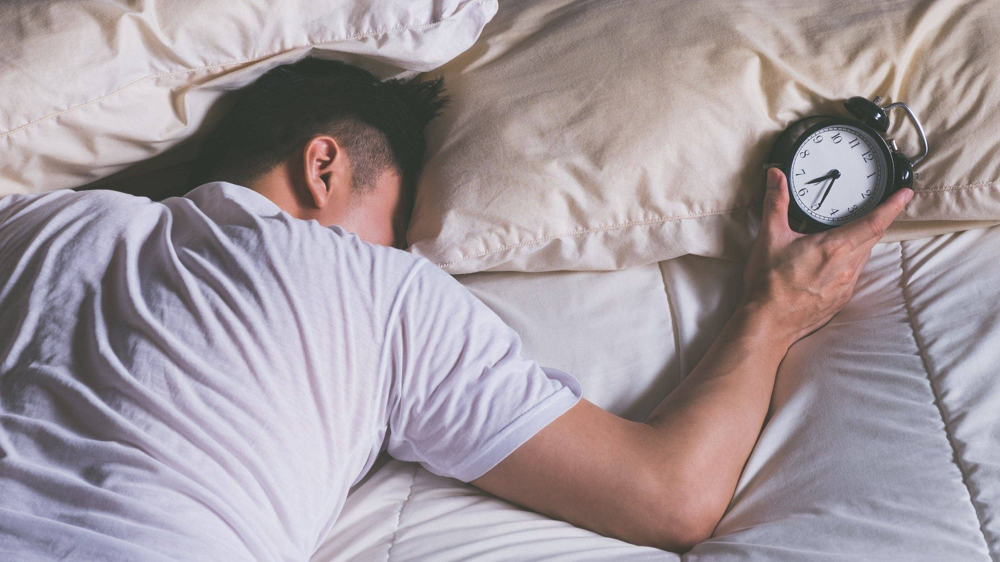
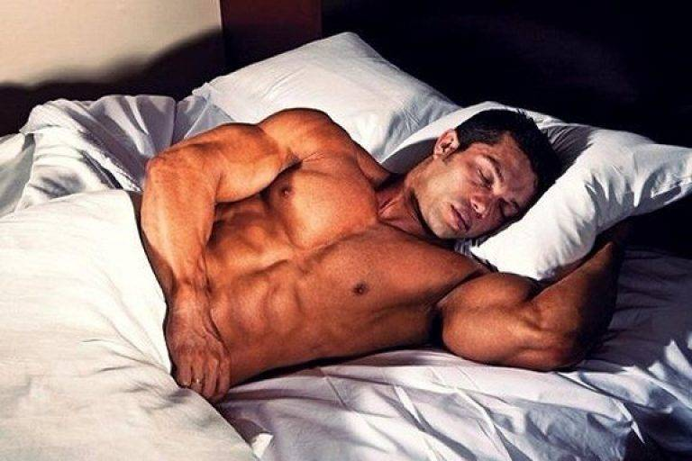
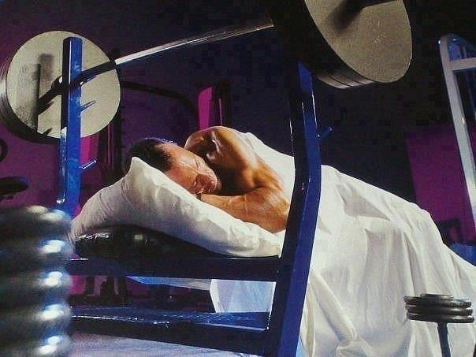

Сон и отдых
Важность здорового сна при наборе массы
Сон и отдых - это невероятно важные аспекты занятий бодибилдингом. Для достижения наилучших результатов необходимо не только обеспечить своему телу достаточно времени на восстановление, но также уделить должное внимание качеству вашего сна.
Один из главных факторов, влияющих на качество вашего сна, является режим. Бодибилдинг по определению нагружает ваше тело и требует много энергии для восстановления, потому важно уделить должное внимание регулярности своего режима сна.

Также рекомендуется выделять достаточно времени на отдых между тренировками, чтобы ваше тело могло полностью восстановиться и подготовиться к следующей тренировке. Отсутствие достаточного количества времени на восстановление может привести к перенапряжению вашего тела, что в конечном итоге может замедлить прогресс.

Когда дело доходит до качества вашего сна, существует несколько шагов, которые вы можете предпринять, чтобы улучшить его, такие как:
- избегайте кофеина, алкоголя, никотина и других химических веществ, которые мешают засыпанию. Мы все знаем, что кофеин и никотин являются стимуляторами, но многие не знают, что алкоголь также может нарушить ночной отдых. Он помогает заснуть, но через пару часов после приема, алкоголь начинает действовать как стимулятор и может увеличить количество пробуждений в течение ночи.
- сделайте достаточный ночной отдых приоритетом (также как правильные рацион питания и программа тренировок).
- стремитесь к тому, чтоб в спальне было темно и прохладно. Это наиболее оптимальная среда для засыпания. Яркий свет перед сном может подавить выработку мелатонина — гормона, который вызывает сон.
- не смотрите телевизор и не пользуйтесь компьютером, планшетом или смартфоном не менее чем за час до сна. Эти устройства излучают так называемый «голубой свет», который является мощным мелатонин-супрессором (угнетает продукцию).
- устанавливайте расслабляющий "ритуал отхода в царство Морфея". Например, принимайте ванну, читайте книгу, слушайте успокаивающую музыку, делайте упражнения на растяжку и дыхание. Избегайте стрессовых или возбуждающих разговоров.
- не заводите себя и не нервничайте по поводу времени. Если вы постоянно смотрите на часы, нервничаете или торопитесь, тело начинает производить кортизол, который заставляет тело проснуться.
Игнорируйте время. Если не получается сразу заснуть, поднимитесь и займитесь какой-нибудь успокаивающей деятельностью (чтение, музыка), пока веки не отяжелеют.
- старайтесь не сбивать ваши внутренние часы. Ложитесь и просыпайтесь в одно и тоже время
- не тренируйтесь слишком поздно. Завершайте тренировку минимум за 3 часа до того, как лечь спать, чтобы уровень кортизола и температура тела успели нормализоваться, что способствует лучшему засыпанию. С другой стороны, медленные растяжения перед отходом в постель — это отличный способ расслабиться.
- cоздайте уютную и тихую обстановку в продолжи в своей спальне - поменяйте старую постель на новую, попробуйте использовать затемняющие шторы, убедитесь, что у вас тихий и прохладный климат.
Кроме того, если вы испытываете трудности с засыпанием и качеством сна, рекомендуется посетить врача или специалиста по сну, чтобы выявить возможные причины этих проблем и узнать, какие меры предпринять для их решения.

Практическое видео
В целом, для достижения оптимальных результатов в бодибилдинге, необходимо уделить должное внимание своему сну и отдыху. Правильный режим сна и достаточный отдых помогут вашему телу восстановиться и готовиться к следующей тренировке, что даст вам возможность достигнуть новых высот в вашем подходе к бодибилдингу.